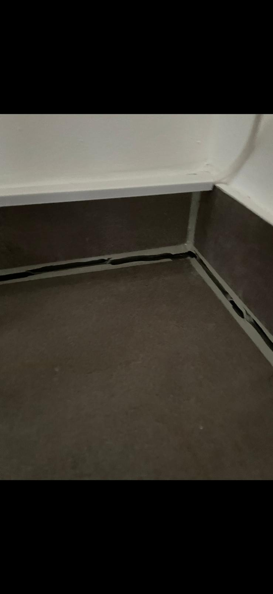
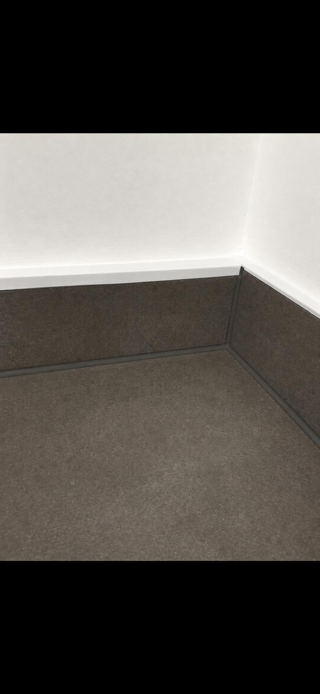

Silikon- & PU-Fugen, Naturstein, Abdichtung und Fugensanierung – für Bad, Küche, Fassade und Gewerbe. Vom zertifizierten Fugenmeister aus Tornesch, im Kreis Pinneberg und in Hamburg.
Vom einzelnen Silikonanschluss im Bad bis zur gewerblichen Spezialfuge – meisterhaft ausgeführt.
Dusche, Wanne, Waschbecken, Küche & Fenster – sauber neu gezogen.
Mehr erfahren →Eine schadhafte, undichte Anschlussfuge – und das Ergebnis nach unserer Sanierung. Verschieben Sie den Regler im Bild und sehen Sie den Unterschied.
Mehr Referenzen ansehen

VorherNachherRufen Sie an oder schicken Sie ein Foto der betroffenen Stelle – wir melden uns schnell mit einer ehrlichen Einschätzung.
Jetzt anrufen: 0162 93 97703